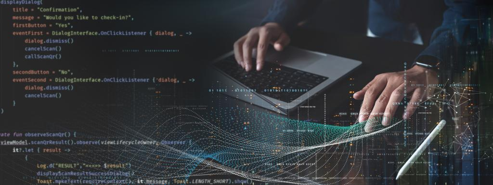

Understanding the JavaScript Event Loop
A Brief Introduction
By Christopher Robison
August 22, 2021

JavaScript is a non-blocking, single-threaded language, but how does it handle asynchronous operations like AJAX requests, timers, and user interactions? Enter the Event Loop, a core concept that allows JavaScript to juggle multiple tasks without getting bogged down. In this post, we’ll dissect the Event Loop to help you understand its inner workings.
Concepts
The Call Stack: Where It All Begins
Before we dive into the Event Loop, it’s crucial to understand the Call Stack. Think of it as a stack of plates; the last plate you place on the stack will be the first one you take off. In JavaScript, when a function is invoked, it’s added to the Call Stack. The function is executed and removed from the stack once it’s finished.
Function calls form a stack of frames. The following example comes directly from the MDN website:
function foo(b) {
const a = 10;
return a + b + 11;
}
function bar(x) {
const y = 3;
return foo(x * y);
}
const baz = bar(7); // assigns 42 to baz
Order of operations:
- When calling
bar, a first frame is created containing references tobar's arguments and local variables. - When
barcallsfoo, a second frame is created and pushed on top of the first one, containing references tofoo's arguments and local variables. - When
fooreturns, the top frame element is popped out of the stack (leaving onlybar's call frame). - When bar returns, the stack is empty.
Note: Arguments and local variables are stored outside of the stack and will continue to exist for references in nested functions, even if their outer function has returned.
Heap: Object Storage
The Heap is where objects are stored. Unlike the stack, which follows a last-in, first-out model, the Heap is unstructured, making it ideal for data storage.
The Event Queue: A Waiting Room
JavaScript uses an Event Queue to keep track of all the events that occur. When an event happens—like a mouse click or data received from an API—the event’s callback function is placed into the Event Queue.
The Event Loop: The Grand Orchestrator
The Event Loop continuously checks the Call Stack to see if it’s empty. If it is, the Event Loop takes the first event from the Event Queue and moves it to the Call Stack for execution. This is how JavaScript manages to be non-blocking despite being single-threaded.
A Simple Analogy
Imagine you’re cooking in a kitchen. You’ve got pasta boiling on one burner and sauce simmering on another. You can’t leave the pasta unattended, but you also need to stir the sauce. The Event Loop is like you—the chef—constantly checking each pot and knowing when to switch tasks to make sure nothing burns.
A Real-World Example
Let’s say you’ve got a button on your webpage that, when clicked, fetches data from an API. When the button is clicked, a ‘click’ event is registered, and its callback function is sent to the Event Queue. The Event Loop waits for the Call Stack to empty before moving the ‘click’ event’s callback function for execution. Once executed, the API data appears on your webpage—smooth and efficient.
Conclusion
The JavaScript Event Loop is an elegant solution to the challenges of asynchronous programming in a single-threaded environment. It ensures that JavaScript can handle multiple tasks simultaneously, without missing a beat. So, the next time your code performs like a well-oiled machine, tip your hat to the Event Loop—the unsung hero of JavaScript.